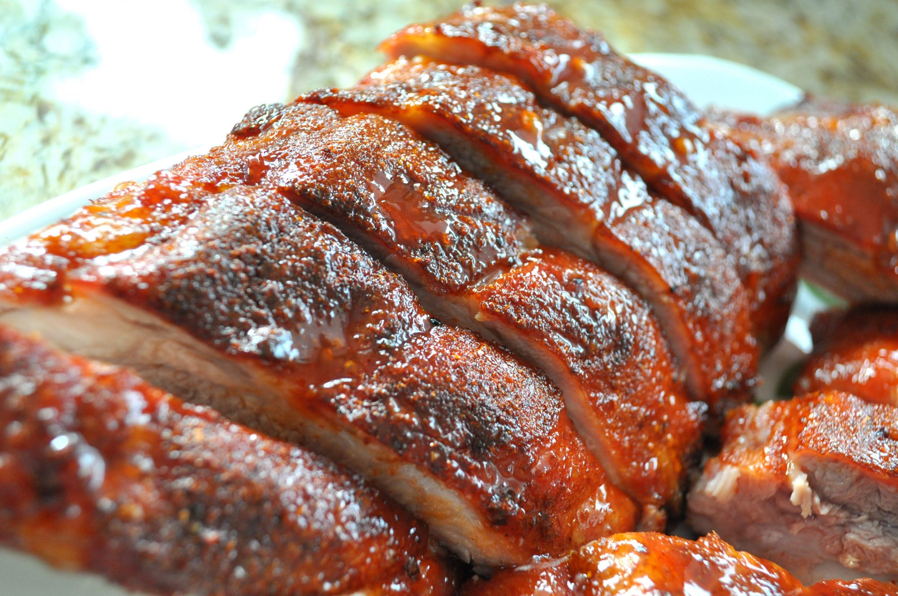

Baby Back Ribs

Description
Did you know you can make restaurant-worthy baby back ribs in the comfort of your own kitchen? Well, you can! You just need a good recipe — and that's where we come in. This top-rated recipe produces tender, juicy ribs that you'll want to make again and again.
Ingredients
- 1 tablespoon ground cumin
- 1 tablespoon chili powder
- 1 tablespoon paprika
- salt and pepper to taste
- 3 pounds baby back pork ribs
- 1 cup barbeque sauce
Steps
- Preheat a gas grill for high heat, or arrange charcoal briquettes on one side of the barbeque. Lightly oil the grate.
- In a small jar, combine cumin, chili powder, paprika, salt, and pepper. Close the lid, and shake to mix.
- Trim the membrane sheath from the back of each rack. Run a small, sharp knife between the membrane and each rib, and snip off the membrane as much as possible. Sprinkle as much of the rub onto both sides of the ribs as desired. To prevent the ribs from becoming too dark and spicy, do not thoroughly rub the spices into the ribs. Store the unused portion of the spice mix for future use.
- Place aluminum foil on lower rack to capture drippings and prevent flare-ups. Lay the ribs on the top rack of the grill (away from the coals, if you're using briquettes). Reduce gas heat to low, close lid, and leave undisturbed for 1 hour. Do not lift the lid at all.
- Brush ribs with barbecue sauce, and grill an additional 5 minutes. Serve ribs as whole rack, or cut between each rib bone and pile individually on a platter.